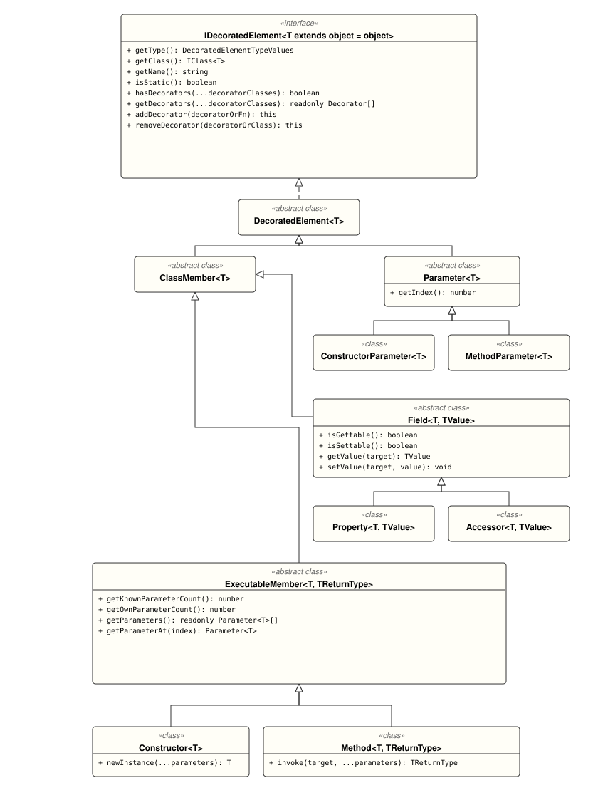

A reflection framework for TypeScript and JavaScript that supports decorator inheritance without relying on reflect-metadata.
The reflector package offers a comprehensive examination of TypeScript classes. It provides an extensive mechanism for querying and filtering detailed information about class structures. The package supports reflection of decorated class members and parameters through the built-in concept of Annotation Decorators. Annotation Decorators enable the labeling of various class members and parameters in TypeScript. The reflector package handles advanced cases, such as dynamic runtime decoration and inheritance of decorated class members.
@decorators; dynamic: at runtime, e.g., for third-party libraries).To use the @decorator() syntax in TypeScript, you must configure the tsconfig.json file. However, it is possible to bypass this requirement by using dynamic decoration, which also works in JavaScript projects.
{
"compilerOptions": {
"experimentalDecorators": true,
"emitDecoratorMetadata": true
}
}
:warning: Important! Support for TypeScript 5.x decorators will be available after the release of "decorated parameters".
More Information → "Differences with Experimental Legacy Decorators"
$ yarn add @semaver/reflector --peer
$ npm install @semaver/reflector
:warning: Important! Please note that this package has a peer dependency on the
@semaver/corelibrary.:warning: Important! Install the library as a peer dependency if possible.
To get familiar with the Reflector API, we will explore some simple examples. These examples are based on a real implementation of a dependency injection framework, also known as an Injector.
Processing the dependency tree is outside the scope of this example. Instead, we will focus on defining decorators and retrieving information about them using the Reflector.
@inject(type: IType)This decorator marks class members for dependency injection, where the type parameter is a class or interface. It can be applied to constructor parameters, instance properties, and instance setters, but not to other class members. If a class inherits properties or setters with this decorator from a superclass, the decorator will be applied to the current class. If the current class has its own decorator of this type, it will override the one from the superclass. For decorators on constructor parameters, we follow the rules based on "Annotation Decorators Usage for Constructor Parameters". The inheritance rules are applied by default.
The type parameter can be a class or an interface.
import { IFunction, IType } from "@semaver/core";
import { Decorator, MetadataAccessPolicy, MetadataAccessPolicyValues } from "@semaver/reflector";
export function inject(type: IType<object>): IFunction<void> {
return Decorator.build(new InjectDecorator(type));
}
export class InjectDecorator extends Decorator {
protected readonly _type: IType<object>;
public constructor(type: IType<object>) {
super();
this._type = type;
}
public getType(): IType<object> {
return this._type;
}
public getAccessPolicy(): MetadataAccessPolicyValues {
return (
MetadataAccessPolicy.INSTANCE_PROPERTY |
MetadataAccessPolicy.INSTANCE_ACCESSOR |
MetadataAccessPolicy.PARAMETER_IN_CONSTRUCTOR
);
}
public getParameters(): ReadonlyArray<unknown> {
return [this._type];
}
}
@optional()Marks dependency injection as optional. This decorator can be applied to properties, setters, and constructor parameters, though its use on constructor parameters may be restricted depending on the dependency injection framework. The inheritance rules are the same as those for the @inject decorator.
import { IFunction } from "@semaver/core";
import { Decorator, MetadataAccessPolicy, MetadataAccessPolicyValues } from "@semaver/reflector";
export function optional(): IFunction<void> {
return Decorator.build(new OptionalDecorator());
}
export class OptionalDecorator extends Decorator {
public getAccessPolicy(): MetadataAccessPolicyValues {
return (
MetadataAccessPolicy.INSTANCE_PROPERTY |
MetadataAccessPolicy.INSTANCE_ACCESSOR |
MetadataAccessPolicy.PARAMETER_IN_CONSTRUCTOR
);
}
}
@named(id: string | number | symbol)Allows injections by ID. This decorator can be applied to properties, setters, and constructor parameters, following the same inheritance rules as @inject and @optional.
The id parameter can be a string, number, or symbol.
import { Decorator, MetadataAccessPolicy, MetadataAccessPolicyValues } from "@semaver/reflector";
type DependencyId = string | number | symbol;
export class NamedDecorator extends Decorator {
protected readonly _name: DependencyId;
public constructor(name: DependencyId) {
super();
this._name = name;
}
public getName(): DependencyId {
return this._name;
}
public getAccessPolicy(): MetadataAccessPolicyValues {
return (
MetadataAccessPolicy.INSTANCE_PROPERTY |
MetadataAccessPolicy.INSTANCE_ACCESSOR |
MetadataAccessPolicy.PARAMETER_IN_CONSTRUCTOR
);
}
public getParameters(): ReadonlyArray<unknown> {
return [this._name];
}
}
@postConstruct()This decorator allows methods to execute after all dependencies have been injected. It can only be applied to instance methods and follows default inheritance rules, so multiple @postConstruct methods are allowed.
import { IFunction } from "@semaver/core";
import { Decorator, MetadataAccessPolicy, MetadataAccessPolicyValues } from "@semaver/reflector";
export function postConstruct(): IFunction<void> {
return Decorator.build(new PostConstructDecorator());
}
export class PostConstructDecorator extends Decorator {
public getAccessPolicy(): MetadataAccessPolicyValues {
return MetadataAccessPolicy.INSTANCE_METHOD;
}
}
@preDestroy()This decorator allows methods to execute before destruction. Like @postConstruct, it can only be applied to instance methods and follows default inheritance rules, allowing multiple @preDestroy methods.
import { IFunction } from "@semaver/core";
import { Decorator, MetadataAccessPolicy, MetadataAccessPolicyValues } from "@semaver/reflector";
export function preDestroy(): IFunction<void> {
return Decorator.build(new PreDestroyDecorator());
}
export class PreDestroyDecorator extends Decorator {
public getAccessPolicy(): MetadataAccessPolicyValues {
return MetadataAccessPolicy.INSTANCE_METHOD;
}
}
Let's define the classes that use these decorators:
@inject and @named decorators applied to a property.@inject decorator is applied to the first constructor parameter.@inject and @optional decorators are applied to the second constructor parameter.@postConstruct decorator is applied to a method.:warning: The order of decorators can be arbitrary.
import { inject, named, optional, postConstruct } from "./decorators";
import { SomeType } from "./SomeType";
import { AnotherTypeInterface } from "./AnotherTypeInterface";
import { ThirdPartyClass } from "./ThirdPartyClass";
export class BaseClass extends ThirdPartyClass {
@inject(SomeType)
@named("someProperty")
public someProperty: SomeType | undefined;
public constructor(
@inject(SomeType) firstParam: SomeType,
@inject(AnotherTypeInterface) @optional() secondParam?: AnotherTypeInterface
) {
super();
// handle firstParam
// handle secondParam
}
@postConstruct()
public initialize(): void {
// Initialization logic after dependencies are injected
console.log("BaseClass initialized");
}
}
This class inherits from the base class and includes an additional @inject for a setter and the @postConstruct decorator.
import { BaseClass } from "./BaseClass";
import { SomeType } from "./SomeType";
import { AnotherType } from "./AnotherType";
import { inject, postConstruct } from "./decorators";
export class ChildClass extends BaseClass {
private _someOtherProperty: SomeType | undefined;
@inject(SomeType)
public set someOtherProperty(value: SomeType | undefined) {
this._someOtherProperty = value;
}
public constructor() {
super(new SomeType(), new AnotherType());
}
@postConstruct()
public initializeChild(): void {
// Additional initialization logic specific to ChildClass
console.log("ChildClass initialized");
}
}
This class inherits from the base class but does not include any additional decorators.
import { BaseClass } from "./BaseClass";
export class AnotherChildClass extends BaseClass {
// No additional decorators
public someAdditionalMethod(): void {
// method body
}
}
In the implementation of the Injector, we need to retrieve information about decorated classes:
Define an interface to store the retrieved data about decorations for later use:
import { Method, Parameter, Field } from "@semaver/reflector";
import { IClass, IType, Nullable } from "@semaver/core";
type DependencyId = string | number | symbol;
interface InjectionInfo<T extends IDecoratedElement> {
type: IType<object>;
named?: DependencyId;
optional?: boolean;
classMember: T;
}
interface MetaInfo {
decoratedClass: IClass<object>;
constructorParameters: InjectionInfo<Parameter>[];
fields: Record<string, InjectionInfo<Field>>;
postConstructs: Method[];
preDestroys: Method[];
}
Identify all classes that have the @inject decorator.
Retrieve all decorated classes from the class table:
const classTable: IClassTable = Reflector.getClassTable();
const classes: ReadonlySet<IClass<object>> = classTable.getClasses();
For this example, the set contains only two classes: BaseClass and ChildClass, but not AnotherChildClass. Since AnotherChildClass does not have its own decorators, it is not in the class table. To add AnotherChildClass to the class table, we can use the built-in decorator @metaclass, which can only be applied at the class (constructor) level and is not inherited by child classes:
import { metaclass } from "@semaver/reflector";
import { BaseClass } from "./BaseClass";
@metaclass()
export class AnotherChildClass extends BaseClass {
// No additional decorators
public someAdditionalMethod(): void {
// method body
}
}
Alternatively, this can be done dynamically:
Reflector.from(AnotherChildClass).getConstructor().addDecorator(metaclass());
Now we can iterate through all three decorated classes, trying to find classes that contain @inject decorators:
const classTable: IClassTable = Reflector.getClassTable();
const classes: ReadonlySet<IClass<object>> = classTable.getClasses();
const metaInfoByClass: Map<IClass<object>, MetaInfo> = new Map<IClass<object>, MetaInfo>();
classes.forEach((decoratedClass: IClass<object>) => {
const reflector: Reflector = Reflector.from(decoratedClass);
if (
reflector.query().filter(ByDecoratorClass.from(InjectDecorator))
.members().all().length > 0
) {
metaInfoByClass.set(decoratedClass, proceedDecoratedClass(decoratedClass));
}
});
Implement the proceedDecoratedClass function to retrieve detailed information about classes with @inject decorators. It consists of three parts:
postConstruct and preDestroy.const proceedDecoratedClass = (decoratedClass: IClass<object>): MetaInfo => {
const metaInfo: MetaInfo = {
decoratedClass: decoratedClass,
constructorParameters: [],
fields: {},
postConstructs: [],
preDestroys: [],
};
const reflector: Reflector = Reflector.from(decoratedClass);
// PART 1: Constructor Parameters
reflector.getConstructor().getParameters().forEach((parameter) => {
if (parameter.hasDecorators(InjectDecorator)) {
const inject = parameter.getDecorators(InjectDecorator)[0] as InjectDecorator;
const optional = parameter.getDecorators(OptionalDecorator)[0] as OptionalDecorator;
const named = parameter.getDecorators(NamedDecorator)[0] as NamedDecorator;
metaInfo.constructorParameters.push({
type: inject.getType(),
named: named?.getName(),
optional: !!optional,
classMember: parameter,
});
}
});
// PART 2: Fields (Setters and Properties)
reflector.getDecoratedFields().forEach((field) => {
if (field.hasDecorators(InjectDecorator)) {
const inject = field.getDecorators(InjectDecorator)[0] as InjectDecorator;
const optional = field.getDecorators(OptionalDecorator)[0] as OptionalDecorator;
const named = field.getDecorators(NamedDecorator)[0] as NamedDecorator;
metaInfo.fields[field.getName()] = {
type: inject.getType(),
named: named?.getName(),
optional: !!optional,
classMember: field,
};
}
});
// PART 3: Methods (PostConstruct and PreDestroy)
reflector.getDecoratedMethods().forEach((method) => {
if (method.hasDecorators(PostConstructDecorator)) {
metaInfo.postConstructs.push(method);
} else if (method.hasDecorators(PreDestroyDecorator)) {
metaInfo.preDestroys.push(method);
}
});
return metaInfo;
};
Now the information about decorations can be processed by the logic of the injector!
If there's a need to decorate third-party classes without access to the source code, it can be done dynamically:
import { SomeType } from "./SomeType";
import { inject, optional } from "./decorators";
export class ThirdPartyClass {
public get thirdPartyProperty(): SomeType | undefined {
return this._thirdPartyProperty;
}
public set thirdPartyProperty(value: SomeType | undefined) {
this._thirdPartyProperty = value;
}
private _thirdPartyProperty: SomeType | undefined;
}
Reflector.from(ThirdPartyClass)
.getMethod("thirdPartyProperty")
.addDecorator(optional())
.addDecorator(inject(SomeType));
If you need to use an interface as a parameter for the @inject decorator, it can be done by extending the interface using an interface symbol:
import { IInterface, InterfaceSymbol } from "@semaver/core";
export const AnotherTypeInterface: IInterface<AnotherTypeInterface> =
InterfaceSymbol.for("AnotherTypeInterface");
export interface AnotherTypeInterface {
someMethod(): void;
}
Now it is possible to use it like this: @inject(AnotherTypeInterface).
The reflector package provides a powerful API for accessing and querying class structures in TypeScript. It allows you to retrieve information about class members and parameters, especially those annotated with Annotation Decorators.
Note: Annotation Decorators are a mechanism provided by this package for labeling different class members and parameters. To utilize the Reflector effectively, ensure your annotations are built using this mechanism. Learn more about creating and using annotation decorators in the Annotation Decorators section.
You can create a Reflector instance in two ways:
import { Reflector } from "@semaver/reflector";
import { SomeClass } from "./SomeClass";
// Creating Reflector from a class type
const reflectorFromType: Reflector = Reflector.from(SomeClass);
// Creating Reflector from a class instance
const instance = new SomeClass();
const reflectorFromInstance: Reflector = Reflector.from(instance);
Reflector.from() MethodThe Reflector.from() method accepts two parameters:
target: The class type or instance you want to reflect.autoSync (optional): A boolean value indicating whether the reflector should automatically synchronize with dynamic decorations. Defaults to false.Parameter Details:
target: This can be either the class itself or an instance of the class whose structure you wish to examine.
autoSync:
true, the reflector will automatically detect and include any changes made through dynamic decoration.false (default), the reflector will not track dynamic changes.Example with autoSync:
// Reflector with autoSync enabled
const autoSyncReflector: Reflector = Reflector.from(SomeClass, true);
Note: For more information on dynamic decoration, refer to the Dynamic Decoration section.
The Reflector API can access four types of class members and one parameter type:
//---PRIMITIVE DECORATED ELEMENTS---------------------------------------------------------------------------
interface PrimitiveDecoratedElementType {
CONSTRUCTOR: number
PROPERTY: number;
ACCESSOR: number;
METHOD: number;
CONSTRUCTOR_PARAMETER: number;
METHODS_PARAMETER: number;
}
const PrimitiveDecoratedElementEnum: Readonly<PrimitiveDecoratedElementType> = Object.freeze({
CONSTRUCTOR: 1,
PROPERTY: 2,
ACCESSOR: 4,
METHOD: 8,
CONSTRUCTOR_PARAMETER: 16,
METHODS_PARAMETER: 32,
});
//---ADVANCED DECORATED ELEMENTS---------------------------------------------------------------------------
export interface DecoratedElementType extends PrimitiveDecoratedElementType {
CLASS_MEMBER: number;
DECORATED_ELEMENT: number;
EXECUTABLE_ELEMENT: number;
FIELD: number;
PARAMETER: number;
}
export const DecoratedElementEnum: Readonly<DecoratedElementType> = Object.freeze({
CONSTRUCTOR: PrimitiveDecoratedElementEnum.CONSTRUCTOR,
METHOD: PrimitiveDecoratedElementEnum.METHOD,
EXECUTABLE_ELEMENT: PrimitiveDecoratedElementEnum.METHOD |
PrimitiveDecoratedElementEnum.CONSTRUCTOR,
PROPERTY: PrimitiveDecoratedElementEnum.PROPERTY,
ACCESSOR: PrimitiveDecoratedElementEnum.ACCESSOR,
FIELD: PrimitiveDecoratedElementEnum.PROPERTY |
PrimitiveDecoratedElementEnum.ACCESSOR,
CLASS_MEMBER: PrimitiveDecoratedElementEnum.PROPERTY |
PrimitiveDecoratedElementEnum.ACCESSOR |
PrimitiveDecoratedElementEnum.METHOD |
PrimitiveDecoratedElementEnum.CONSTRUCTOR,
CONSTRUCTOR_PARAMETER: PrimitiveDecoratedElementEnum.CONSTRUCTOR_PARAMETER,
METHODS_PARAMETER: PrimitiveDecoratedElementEnum.METHODS_PARAMETER,
PARAMETER: PrimitiveDecoratedElementEnum.CONSTRUCTOR_PARAMETER |
PrimitiveDecoratedElementEnum.METHODS_PARAMETER,
DECORATED_ELEMENT: PrimitiveDecoratedElementEnum.PROPERTY |
PrimitiveDecoratedElementEnum.ACCESSOR |
PrimitiveDecoratedElementEnum.METHOD |
PrimitiveDecoratedElementEnum.CONSTRUCTOR |
PrimitiveDecoratedElementEnum.CONSTRUCTOR_PARAMETER |
PrimitiveDecoratedElementEnum.METHODS_PARAMETER,
});
export type DecoratedElementTypeValues = DecoratedElementType[keyof DecoratedElementType];
These reflected types are wrapper classes around the corresponding language constructs, providing encapsulated information about the requested class members or parameters.
Note: For more details on reflected types, refer to the Reflected Types Architecture.
To retrieve information from a class, create a Reflector instance and use the relevant API methods. If a class member or parameter is decorated, the Reflector will return additional information about the applied decorators.
Important: When retrieving class members or parameters by name, be aware of the obfuscation/minification level of your code. These processes can alter names, making it impossible for the Reflector to find the requested code.
import { Reflector } from "@semaver/reflector";
import { SomeClass } from "./SomeClass";
const reflector: Reflector = Reflector.from(SomeClass);
//---CONSTRUCTOR---------------------------------------------------------------------------
// Returns the constructor of a class (decorated or not)
const baseConstructor: Constructor<SomeClass> = reflector.getConstructor();
//---METHOD---------------------------------------------------------------------------------
// BEWARE OF OBFUSCATION/MINIFICATION LEVEL
// Returns instance/static method by name (decorated or not) or else undefined
const methodName = 'myMethod';
const isMethodStatic = false;
const someMethod: Method<SomeClass> = reflector.getMethod(methodName, isMethodStatic);
//---FIELD (UNION OF ACCESSOR & PROPERTY)----------------------------------------------------
// BEWARE OF OBFUSCATION/MINIFICATION LEVEL
// Returns instance/static field by name (decorated or not) or else undefined
const fieldName = 'myField';
const isFieldStatic = false;
const someField: Field<SomeClass> = reflector.getField(fieldName, isFieldStatic);
//---ACCESSOR--------------------------------------------------------------------------------
// BEWARE OF OBFUSCATION/MINIFICATION LEVEL
// Returns instance/static accessor by name (decorated or not) or else undefined
const accessorName = 'myAccessor';
const isAccessorStatic = false;
const someAccessor: Accessor<SomeClass> = reflector.getAccessor(accessorName, isAccessorStatic);
//---PROPERTY--------------------------------------------------------------------------------
// BEWARE OF OBFUSCATION/MINIFICATION LEVEL
// Returns instance/static property by name (decorated or not) or else undefined
const propertyName = 'myProperty';
const isPropertyStatic = false;
const someProperty: Property<SomeClass> = reflector.getProperty(propertyName, isPropertyStatic);
To facilitate working with class annotation decorators, the Reflector API provides additional decorator-specific methods:
const reflector: Reflector = Reflector.from(SomeClass);
//---ADDITIONAL ANNOTATION DECORATOR-SPECIFIC METHODS------------------------------------------------------
// Returns the constructor if it or any of its parameters are decorated, else undefined
const decoratedConstructor: Constructor<SomeClass> = reflector.getDecoratedConstructor();
// Returns all decorated methods or an empty array if none are found
const methods: ReadonlyArray<Method<SomeClass>> = reflector.getDecoratedMethods();
// Returns all decorated fields (accessors and properties) or an empty array if none are found
const fields: ReadonlyArray<Field<SomeClass>> = reflector.getDecoratedFields();
// Returns all decorated accessors or an empty array if none are found
const accessors: ReadonlyArray<Accessor<SomeClass>> = reflector.getDecoratedAccessors();
// Returns all decorated properties or an empty array if none are found
const properties: ReadonlyArray<Property<SomeClass>> = reflector.getDecoratedProperties();
// Returns all decorated constructors, methods, accessors, fields, or an empty array if none are found
const members: ReadonlyArray<ClassMember<SomeClass>> = reflector.getDecoratedMembers();
The Query API allows you to retrieve different class members and parameters. However, the reflector queries work only with elements that are annotated using Annotation Decorators. Non-annotated elements will not be visible to the query mechanism.
Note: For details on creating and using annotation decorators, see the Annotation Decorators section.
import { ClassMember, Reflector, QueryExecutor, QueryMembersSelector } from "@semaver/reflector";
import { MyClass } from "./MyClass";
// Returns a query executor for the class
const query: QueryExecutor<MyClass> = Reflector.from(MyClass).query();
//---CLASS MEMBERS---------------------------------------------------------------------------
// Returns a member selector from the query
const memberSelector: QueryMembersSelector<MyClass> = query.members();
// Returns all class members from the member selector
const members: ClassMember[] = membersSelector.all<ClassMember>();
// Returns the first class member from the member selector
const firstFoundMember: ClassMember = membersSelector.first<ClassMember>();
The Reflector provides an additional Query API specifically for annotation decorators. Since Annotation Decorators support inheritance, it’s essential to distinguish between decorators that will actually be executed and those that are explicitly assigned to a class member or parameter. The actual execution may be influenced by decorator inheritance and Decoration Policies, if defined.
Note: For more information on decoration policies, refer to the Decoration Policies section.
//---CLASS MEMBER & PARAMETER ANNOTATION DECORATORS----------------------------------------------------
// Returns all decorators from the query, including inherited decorators and those affected by decoration policies
const decoratorSelector: QueryDecoratorSelector<MyClass> = query.decorators();
// Returns only the decorators explicitly assigned to the class, excluding inheritance and decoration policies
const ownDecorators: QueryDecoratorSelector<MyClass> = query.ownDecorators();
// Retrieves all decorators from the decorator selector
const decorators: Decorator[] = decoratorSelector.all();
// Retrieves class member decorators from the decorator selector
const memberDecorators: Decorator[] = decoratorSelector.ofMembers();
// Retrieves class parameter decorators from the decorator selector
const parameterDecorators: Decorator[] = decoratorSelector.ofParameters();
You can filter class members and parameters using various filtering conditions:
ByMemberName: Filter class members by name.ByMemberType: Filter class members by type (CONSTRUCTOR, METHOD, PROPERTY, ACCESSOR).ByStaticMember: Filter class members by static or non-static.ByDecoratorClass: Filter class members by annotation decorator class (either class member or parameter decorator).ByMemberDecoratorClass: Filter class members by class member annotation decorator class.ByParameterDecoratorClass: Filter class members by parameter annotation decorator class.Filtering is based on the query mechanism described in the Query Class Members and Parameters section. To access filtered values, refer to the Query API.
Important: When retrieving a class member or parameter by name, be cautious of obfuscation/minification levels, as these processes can change names and make reflection impossible.
import {
Reflector,
QueryExecutor,
ByMemberName,
ByMemberType,
ByStaticMember,
ByDecoratorClass,
ByParameterDecoratorClass,
ByMemberDecoratorClass
} from "@semaver/reflector";
import { MyClass, AnnotationDecorator } from "./MyClass";
const query: QueryExecutor<MyClass> = Reflector.from(MyClass).query();
//---FILTER BY NAME-------------------------------------------------------------------------
// BEWARE OF OBFUSCATION/MINIFICATION LEVEL
const memberName: string = "someClassMemberName";
const byMemberNameQuery: QueryExecutor<MyClass> = query.filter(ByMemberName.from(memberName));
//---FILTER BY MEMBER TYPE------------------------------------------------------------------
const memberType: DecoratedElementType = DecoratedElementType.METHOD;
const byMemberTypeQuery: QueryExecutor<MyClass> = query.filter(ByMemberType.from(memberType));
//---FILTER BY STATIC/NON-STATIC MEMBER------------------------------------------------------
const isMemberStatic: boolean = false;
const byMemberStaticQuery: QueryExecutor<MyClass> = query.filter(ByStaticMember.from(isMemberStatic));
//---FILTER BY ANNOTATION DECORATOR (3 Examples)
const decoratorClass: IClass<AnnotationDecorator> = AnnotationDecorator;
// 1. Filter by annotation decorator for class members & parameters
const byDecoratorClassQuery: QueryExecutor<MyClass> = query.filter(ByDecoratorClass.from(decoratorClass));
// 2. Filter by annotation decorator for parameters only
const byParameterDecoratorClassQuery: QueryExecutor<MyClass> = query.filter(ByParameterDecoratorClass.from(decoratorClass));
// 3. Filter by annotation decorator for class members only
const byMemberDecoratorClassQuery: QueryExecutor<MyClass> = query.filter(ByMemberDecoratorClass.from(decoratorClass));
You can combine or chain different filtering conditions or create custom filters by implementing the IQueryCondition interface. Examples can be found in the existing filters:
The reflector package, along with its Annotation Decorators, allows you to dynamically add or remove decorators at runtime. Based on the Reflected Types Architecture, each Reflected Type is a child of the DecoratedElement<T> class and inherits the following two methods:
addDecorator(decoratorOrFn: Decorator | DecoratorFn): boolean
Adds decorators at runtime.
decoratorOrFn: The decorator function to be added.removeDecorator(decoratorOrClass: IClass<Decorator> | Decorator): boolean
Removes decorators at runtime.
decoratorOrClass: The decorator class to be removed.Assume we have defined an annotation decorator as follows:
Note: For detailed information on how to create annotation decorators, refer to the Annotation Decorators section.
import { Decorator } from "@semaver/reflector";
export function annotation(): DecoratorFn {
return Decorator.build(new AnnotationDecorator());
}
export class AnnotationDecorator extends Decorator {
// Implementation details
}
When decorators are added or removed dynamically, the Reflector must be refreshed to recognize these changes. There are two ways to do this:
Enable autoSync
Set the autoSync parameter to true when creating the Reflector. This will automatically update the Reflector each time the Reflector API is called, keeping it always up-to-date.
autoSync is false, meaning the Reflector does not update automatically.const reflector: Reflector<MyClass> = Reflector.from(MyClass, true); // autoSync is true
Manually Refresh the Reflector
If autoSync is set to false (the default), the Reflector won’t automatically see added or removed decorators. In this case, you need to explicitly update the Reflector using the refresh() method.
const reflector: Reflector<MyClass> = Reflector.from(MyClass); // autoSync is false by default
reflector.getConstructor().addDecorator(annotation()); // added decorator is not yet visible to the Reflector
reflector.refresh(); // explicit update makes the newly added decorator visible to the Reflector
Below is the complete API for adding and removing decorators dynamically using the Reflector:
const reflector: Reflector<MyClass> = Reflector.from(MyClass);
//---CONSTRUCTOR---------------------------------------------------------------------------
reflector.getConstructor().addDecorator(annotation());
// OR
reflector.getConstructor().addDecorator(Decorator.build(new AnnotationDecorator()));
reflector.getConstructor().removeDecorator(AnnotationDecorator);
//---CONSTRUCTOR PARAMETERS-----------------------------------------------------------------
reflector.getDecoratedConstructor().getParameterAt(0).addDecorator(annotation());
reflector.getDecoratedConstructor().getParameterAt(0).removeDecorator(AnnotationDecorator);
//---FIELD (UNION OF ACCESSOR & PROPERTY)---------------------------------------------------
// `true` - for instance class member, `false` - for static class members
reflector.getField(memberName, true).addDecorator(annotation());
reflector.getField(memberName, true).removeDecorator(AnnotationDecorator);
//---ACCESSOR-------------------------------------------------------------------------------
// `true` - for instance class member, `false` - for static class members
reflector.getAccessor(memberName, true).addDecorator(annotation());
reflector.getAccessor(memberName, true).removeDecorator(AnnotationDecorator);
//---PROPERTY-------------------------------------------------------------------------------
// `true` - for instance class member, `false` - for static class members
reflector.getProperty(memberName, true).addDecorator(annotation());
reflector.getProperty(memberName, true).removeDecorator(AnnotationDecorator);
//---METHOD---------------------------------------------------------------------------------
reflector.getMethod(memberName, true).addDecorator(annotation());
reflector.getMethod(memberName, true).removeDecorator(AnnotationDecorator);
//---METHOD PARAMETERS-----------------------------------------------------------------------
// Adds or removes decorators for method parameters
reflector.getMethod(memberName, true).getParameterAt(0).addDecorator(annotation());
reflector.getMethod(memberName, true).getParameterAt(0).removeDecorator(AnnotationDecorator);
reflector.refresh(); // Ensures all dynamic changes are recognized by the Reflector
The reflector package stores information about decorated classes (those using Annotation Decorators) in a centralized storage called ClassTable. This storage allows you to retrieve classes that have been explicitly decorated.
Warning: The ClassTable only contains classes that have their own decorators, not those that acquire decorators through inheritance or Decoration Policies. However, you can add such a class to the ClassTable by applying the
@reflect()annotation decorator to it.
You can retrieve decorated classes from the ClassTable using the following code:
const classTable: IClassTable = Reflector.getClassTable();
The IClassTable interface provides the following methods:
export interface IClassTable {
getClasses(): ReadonlySet<IMetadataClass<unknown>>;
getSyncHash(): string;
subscribe(...subscribers: IClassTableSubscriber[]): this;
unsubscribe(...subscribers: IClassTableSubscriber[]): this;
}
getClasses: Returns a set of all decorated classes.getSyncHash: Returns a hash string that is recalculated each time the ClassTable is modified, allowing you to detect changes.subscribe/unsubscribe: Allows you to subscribe or unsubscribe from ClassTable modifications. Subscribers receive detailed information about what was modified.When subscribing to ClassTable updates, the IClassTableSubscriber interface provides a method to handle updates:
export interface IClassTableSubscriber {
onClassTableUpdate(update: IClassTableUpdate): void;
}
The IClassTableUpdate interface provides detailed information about the updates:
export interface IClassTableUpdate<TDecorator extends Decorator = Decorator, T = unknown> {
readonly type: ClassTableUpdateTypes; // Enum: { METADATA_ADDED, METADATA_REMOVED }
readonly decorator: TDecorator;
readonly targetClass: IClass<T>;
readonly decoratedElement: {
readonly type: DecoratedElementType; // Class member type (Constructor, Method, Parameters, etc.)
readonly name: string; // Name of the class member
readonly isStatic: boolean; // Indicates if the class member is static
readonly parameterIndex: number; // Index of the parameter, if applicable
};
}
type: Indicates the type of update, whether metadata/decorator was added or removed.
decorator: The decorator object itself.
targetClass: The class that had its decorators modified.
decoratedElement: Information about the decorated element:
type: The type of class member (e.g., Constructor, Method, Parameters).name: The name of the class member.isStatic: Indicates whether the class member is static.parameterIndex: The parameter index if the decorated element is a parameter.Annotation Decorators is a decoration mechanism provided by the reflector package for TypeScript code annotations. It enables labeling various class members and parameters, which the reflector package then uses to query class structures. Below, you’ll find information on how to create and use annotation decorators to make them available for the Reflector.
For additional insights into how the Reflector retrieves information about annotation decorators, refer to the Architectural Notes: Behind the Scene of Annotation Decorators.
You can define an annotation decorator in four steps:
Similar to TypeScript decorators, you need to define a decorator function. However, the decorator function must include a call to Decorator.build(), which expects an annotation decorator class of type Decorator (defined in Step 2).
export function annotation(): DecoratorFn {
return Decorator.build(new AnnotationDecorator());
}
Next, define a new AnnotationDecorator class by extending the abstract Decorator class from the reflector package. The main purpose of the AnnotationDecorator class is to define or override decoration policies (Step 3) and specify the accepted parameters for the decorator function (Step 4).
import { Decorator } from "@semaver/reflector";
export function annotation(): DecoratorFn {
return Decorator.build(new AnnotationDecorator());
}
export class AnnotationDecorator extends Decorator {
// Optional: Define decoration policies in Step 3
// Optional: Define decorator parameters in Step 4
}
Decoration policies define rules for how decorators behave in specific cases, particularly related to class inheritance. There are currently five policies:
Access Policy: Defines whether the decorator can be applied to a specific member, argument, or member group.
ALL (applies to all Reflected Types).Same-Target-Multi-Usage Policy: Determines the behavior when a class member or argument has more than one decorator of the same type.
NOT_ALLOWED (only the first decorator is used).Collision Policy: Handles situations where a decorator exists in both a child class and its parent class for the same member or argument.
OVERRIDE_PARENT (the child class decorator is used).Not-Existence Policy: Governs behavior when a decorator exists in a parent class but not in the child class.
APPLY (the parent class decorator is used).Appearance Policy: Manages behavior when a decorator exists in the child class but not in the parent class.
APPLY (the child class decorator is used).Note: For more details on decoration policies and their parameters, see the Decoration Policies section.
Example Implementation:
import {
Decorator,
DecoratorFn,
MetadataAccessPolicy,
MetadataAccessPolicyValues,
MetadataCollisionPolicy,
MetadataCollisionPolicyValues,
MetadataNotExistencePolicy,
MetadataNotExistencePolicyValues,
MetadataSameTargetMultiUsagePolicy,
MetadataSameTargetMultiUsagePolicyValues
} from "@semaver/reflector";
export function annotationWithoutPolicyProvider(): DecoratorFn {
return Decorator.build(new AnnotationWithoutPolicyProviderDecorator());
}
export class AnnotationWithoutPolicyProviderDecorator extends Decorator {
// Allow only instance properties, accessors, and constructor parameters
public getAccessPolicy(): MetadataAccessPolicyValues {
return MetadataAccessPolicy.INSTANCE_PROPERTY |
MetadataAccessPolicy.INSTANCE_ACCESSOR |
MetadataAccessPolicy.PARAMETER_IN_CONSTRUCTOR;
}
// Override parent class decorator if both exist on the same member
public getCollisionPolicy(): MetadataCollisionPolicyValues {
return MetadataCollisionPolicy.OVERRIDE_PARENT;
}
// Apply parent class decorator if none exists in the child class
public getNotExistencePolicy(): MetadataNotExistencePolicyValues {
return MetadataNotExistencePolicy.APPLY;
}
// Do not allow multiple decorators on the same class member or parameter
public getSameTargetMultiUsagePolicy(): MetadataSameTargetMultiUsagePolicyValues {
return MetadataSameTargetMultiUsagePolicy.NOT_ALLOWED;
}
}
Policy Provider:
For more granular control, you can define different sets of policies for different reflection types using a Policy Provider.
Example Implementation:
import {
Decorator,
DecoratorFn,
IPolicyProvider,
MetadataAccessPolicy,
MetadataAccessPolicyValues,
MetadataAppearancePolicy,
MetadataAppearancePolicyValues,
MetadataCollisionPolicy,
MetadataCollisionPolicyValues,
MetadataNotExistencePolicy,
MetadataNotExistencePolicyValues,
MetadataSameTargetMultiUsagePolicy,
MetadataSameTargetMultiUsagePolicyValues,
PolicyProvider,
PrimitiveMetadataAccessPolicyValues
} from "../../src";
export function annotationWithPolicyProvider(): DecoratorFn {
return Decorator.build(new AnnotationWithPolicyProviderDecorator());
}
export class AnnotationWithPolicyProviderDecorator extends Decorator {
private static policyProvider: IPolicyProvider =
// Allow for methods and properties only
new PolicyProvider(MetadataAccessPolicy.METHOD | MetadataAccessPolicy.PROPERTY)
.setAppearancePolicy(MetadataAppearancePolicy.DEFAULT)
.setCollisionPolicy(MetadataCollisionPolicy.DEFAULT)
.setNotExistencePolicy(MetadataNotExistencePolicy.DEFAULT)
// Allow multiple decorators for instance methods and properties
.setSameTargetMultiUsagePolicy(
MetadataSameTargetMultiUsagePolicy.ALLOWED,
MetadataAccessPolicy.INSTANCE_METHOD | MetadataAccessPolicy.INSTANCE_PROPERTY)
// Do not allow multiple decorators for static methods and properties
.setSameTargetMultiUsagePolicy(
MetadataSameTargetMultiUsagePolicy.NOT_ALLOWED,
MetadataAccessPolicy.STATIC_METHOD | MetadataAccessPolicy.STATIC_PROPERTY);
public getAccessPolicy(): MetadataAccessPolicyValues {
return AnnotationWithPolicyProviderDecorator.policyProvider.getAccessPolicy();
}
public getAppearancePolicy(
access: PrimitiveMetadataAccessPolicyValues): MetadataAppearancePolicyValues {
return AnnotationWithPolicyProviderDecorator.policyProvider.getAppearancePolicy(access);
}
public getNotExistencePolicy(
access: PrimitiveMetadataAccessPolicyValues): MetadataNotExistencePolicyValues {
return AnnotationWithPolicyProviderDecorator.policyProvider.getNotExistencePolicy(access);
}
public getCollisionPolicy(
access: PrimitiveMetadataAccessPolicyValues): MetadataCollisionPolicyValues {
return AnnotationWithPolicyProviderDecorator.policyProvider.getCollisionPolicy(access);
}
public getSameTargetMultiUsagePolicy(
access: PrimitiveMetadataAccessPolicyValues): MetadataSameTargetMultiUsagePolicyValues {
return AnnotationWithPolicyProviderDecorator.policyProvider.getSameTargetMultiUsagePolicy(access);
}
}
If needed, you can define custom parameters for the annotation decorator.
Example Implementation:
import { Decorator } from "@semaver/reflector";
export function annotation(): DecoratorFn {
return Decorator.build(new AnnotationDecorator(1, "someString"));
}
export class AnnotationDecorator extends Decorator {
protected readonly myParam1: number;
protected readonly myParam2: string;
constructor(myParam1: number, myParam2: string) {
super();
this.myParam1 = myParam1;
this.myParam2 = myParam2;
}
public getParam1(): number {
return this.myParam1;
}
public getParam2(): string {
return this.myParam2;
}
/* override */
public getParameters(): ReadonlyArray<unknown> {
return [this.myParam1, this.myParam2];
}
}
Annotation decorators are applied similarly to typical TypeScript decorators using the @decorator syntax. However, the application of Decoration Policies can lead to significant differences in behavior.
For example, the @annotation decorator has an Access Policy set to MetadataAccessPolicy.PROPERTY, meaning the decorator is only allowed on class properties. In all other cases, it will be ignored.
export class MyClass extends MySuperClass {
// ALLOWED
@annotation()
public data: MyData;
// NOT ALLOWED BY ACCESS POLICY -> IGNORED
public constructor(@annotation() myOtherData: MyOtherData) {
super();
}
// NOT ALLOWED BY ACCESS POLICY -> IGNORED
@annotation()
public myMethod(myOtherData: MyOtherData) {
// method body
}
}
Warning: Constructor Parameters: If you override a parent constructor in the child class, you must reapply decorators for constructor parameters. Overriding a parent constructor is treated similarly to defining a new method, meaning no policies from the parent constructor are applied. For a detailed explanation, refer to Annotation Decorators Usage for Constructor Parameters.
Decoration policies define the rules for how decorators behave in specific scenarios. Currently, there are two general policies and three class inheritance policies:
General Policies:
Class Inheritance Policies:
The MetadataAccessPolicy defines whether a decorator can be applied to a specific member, argument, or member group.
MetadataAccessPolicy.ALL//---PRIMITIVE ACCESS POLICY---------------------------------------------------------------------------
export interface PrimitiveMetadataAccessPolicyType {
NONE: number;
CONSTRUCTOR: number
INSTANCE_PROPERTY: number;
INSTANCE_ACCESSOR: number;
INSTANCE_METHOD: number;
STATIC_PROPERTY: number;
STATIC_ACCESSOR: number;
STATIC_METHOD: number;
PARAMETER_IN_CONSTRUCTOR: number;
PARAMETER_IN_INSTANCE_METHOD: number;
PARAMETER_IN_STATIC_METHOD: number;
}
export const PrimitiveMetadataAccessPolicy: Readonly<PrimitiveMetadataAccessPolicyType> = Object.freeze({
NONE: 0,
CONSTRUCTOR: 1,
INSTANCE_PROPERTY: 2,
STATIC_PROPERTY: 4,
INSTANCE_ACCESSOR: 8,
STATIC_ACCESSOR: 16,
INSTANCE_METHOD: 32,
STATIC_METHOD: 64,
PARAMETER_IN_CONSTRUCTOR: 128,
PARAMETER_IN_INSTANCE_METHOD: 256,
PARAMETER_IN_STATIC_METHOD: 512,
});
export type PrimitiveMetadataAccessPolicyValues =
PrimitiveMetadataAccessPolicyType[keyof PrimitiveMetadataAccessPolicyType];
//---ADVANCED ACCESS POLICY---------------------------------------------------------------------------
export interface MetadataAccessPolicyType extends PrimitiveMetadataAccessPolicyType {
ALL: number;
PROPERTY: number;
ACCESSOR: number;
METHOD: number;
PARAMETER: number
}
export const MetadataAccessPolicy: Readonly<MetadataAccessPolicyType> = Object.freeze({
NONE: PrimitiveMetadataAccessPolicy.NONE,
CONSTRUCTOR: PrimitiveMetadataAccessPolicy.CONSTRUCTOR,
INSTANCE_PROPERTY: PrimitiveMetadataAccessPolicy.INSTANCE_PROPERTY,
STATIC_PROPERTY: PrimitiveMetadataAccessPolicy.STATIC_PROPERTY,
PROPERTY: PrimitiveMetadataAccessPolicy.INSTANCE_PROPERTY |
PrimitiveMetadataAccessPolicy.STATIC_PROPERTY,
INSTANCE_ACCESSOR: PrimitiveMetadataAccessPolicy.INSTANCE_ACCESSOR,
STATIC_ACCESSOR: PrimitiveMetadataAccessPolicy.STATIC_ACCESSOR,
ACCESSOR: PrimitiveMetadataAccessPolicy.INSTANCE_ACCESSOR |
PrimitiveMetadataAccessPolicy.STATIC_ACCESSOR,
INSTANCE_METHOD: PrimitiveMetadataAccessPolicy.INSTANCE_METHOD,
STATIC_METHOD: PrimitiveMetadataAccessPolicy.STATIC_METHOD,
METHOD: PrimitiveMetadataAccessPolicy.INSTANCE_METHOD |
PrimitiveMetadataAccessPolicy.STATIC_METHOD,
PARAMETER_IN_CONSTRUCTOR: PrimitiveMetadataAccessPolicy.PARAMETER_IN_CONSTRUCTOR,
PARAMETER_IN_INSTANCE_METHOD: PrimitiveMetadataAccessPolicy.PARAMETER_IN_INSTANCE_METHOD,
PARAMETER_IN_STATIC_METHOD: PrimitiveMetadataAccessPolicy.PARAMETER_IN_STATIC_METHOD,
PARAMETER_IN_METHOD: PrimitiveMetadataAccessPolicy.PARAMETER_IN_INSTANCE_METHOD |
PrimitiveMetadataAccessPolicy.PARAMETER_IN_STATIC_METHOD,
PARAMETER: PrimitiveMetadataAccessPolicy.PARAMETER_IN_CONSTRUCTOR |
PrimitiveMetadataAccessPolicy.PARAMETER_IN_INSTANCE_METHOD |
PrimitiveMetadataAccessPolicy.PARAMETER_IN_STATIC_METHOD,
ALL: PrimitiveMetadataAccessPolicy.CONSTRUCTOR |
PrimitiveMetadataAccessPolicy.INSTANCE_PROPERTY |
PrimitiveMetadataAccessPolicy.STATIC_PROPERTY |
PrimitiveMetadataAccessPolicy.INSTANCE_ACCESSOR |
PrimitiveMetadataAccessPolicy.STATIC_ACCESSOR |
PrimitiveMetadataAccessPolicy.INSTANCE_METHOD |
PrimitiveMetadataAccessPolicy.STATIC_METHOD |
PrimitiveMetadataAccessPolicy.PARAMETER_IN_CONSTRUCTOR |
PrimitiveMetadataAccessPolicy.PARAMETER_IN_INSTANCE_METHOD |
PrimitiveMetadataAccessPolicy.PARAMETER_IN_STATIC_METHOD,
});
export type MetadataAccessPolicyValues = MetadataAccessPolicyType[keyof MetadataAccessPolicyType];
The MetadataSameTargetMultiUsagePolicy defines the behavior when a class member or argument has more than one decorator of the same type:
ALLOWED: All decorators are registered.NOT_ALLOWED: Only the first (single) decorator is registered.MetadataSameTargetMultiUsagePolicy.NOT_ALLOWEDexport interface MetadataSameTargetMultiUsagePolicyType {
ALLOWED: number;
NOT_ALLOWED: number;
DEFAULT: number
}
export const MetadataSameTargetMultiUsagePolicy: Readonly<MetadataSameTargetMultiUsagePolicyType> = Object.freeze({
ALLOWED: 0,
NOT_ALLOWED: 1,
DEFAULT: 1,
});
export type MetadataSameTargetMultiUsagePolicyValues =
MetadataSameTargetMultiUsagePolicyType[keyof MetadataSameTargetMultiUsagePolicyType];
The MetadataCollisionPolicy defines the behavior when a decorator exists in both the child class and its direct parent class for the same class member or argument:
SKIP: Both decorators (from the child and parent classes) are not used for the child class.OVERRIDE_CHILD: The parent class decorator is used for the child class.OVERRIDE_PARENT: The child class decorator is used for the child class.JOIN: Both decorators (from the child and parent classes) are used for the child class.THROW_ERROR: An error is thrown if a collision occurs.MetadataCollisionPolicy.OVERRIDE_PARENTexport interface MetadataCollisionPolicyType {
OVERRIDE_PARENT: number;
OVERRIDE_CHILD: number;
THROW_ERROR: number;
JOIN: number;
SKIP: number;
DEFAULT: number
}
export const MetadataCollisionPolicy: Readonly<MetadataCollisionPolicyType> = Object.freeze({
SKIP: 0,
OVERRIDE_CHILD: 1,
OVERRIDE_PARENT: 2,
JOIN: 3,
THROW_ERROR: 4,
DEFAULT: 2,
});
export type MetadataCollisionPolicyValues = MetadataCollisionPolicyType[keyof MetadataCollisionPolicyType];
The MetadataNotExistencePolicy defines the behavior when a decorator does not exist in the child class but exists in its direct parent class for the same class member or argument:
SKIP: The parent class decorator is not used for the child class.APPLY: The parent class decorator is used for the child class.MetadataNotExistencePolicy.APPLYexport interface MetadataNotExistencePolicyType {
APPLY: number;
SKIP: number;
DEFAULT: number
}
export const MetadataNotExistencePolicy: Readonly<MetadataNotExistencePolicyType> = Object.freeze({
SKIP: 0,
APPLY: 1,
DEFAULT: 1,
});
export type MetadataNotExistencePolicyValues =
MetadataNotExistencePolicyType[keyof MetadataNotExistencePolicyType];
The MetadataAppearancePolicy defines the behavior when a decorator exists in the child class but does not exist in the direct parent class for the same class member or argument:
SKIP: The child class decorator is not used if another decorator is found in any non-direct parent (a superclass higher in the hierarchy but not the direct parent). Situations with the direct parent are covered by the Collision Policy.APPLY: The child class decorator is used, ignoring any other superclass decorators.MetadataAppearancePolicy.APPLYexport interface MetadataNotExistencePolicyType {
APPLY: number;
SKIP: number;
DEFAULT: number
}
export const MetadataNotExistencePolicy: Readonly<MetadataNotExistencePolicyType> = Object.freeze({
SKIP: 0,
APPLY: 1,
DEFAULT: 1,
});
export type MetadataNotExistencePolicyValues =
MetadataNotExistencePolicyType[keyof MetadataNotExistencePolicyType];
The Reflected Types Architecture diagram illustrates the various types of class members and parameters supported by the reflector package. It also details the API available for interacting with these reflected types.

Using Annotation Decorators is essential if you want the Reflector to return information about decorated class members.
So how is this information provided?
Every reflected class has two properties: __metadata__ and __cached_metadata__.
__metadata__: Contains the class's own information about decorated class members.__cached_metadata__: Contains the class's own __metadata__ merged with its superclass’s __cached_metadata__, according to the Decoration Policies.To support the inheritance of decorated class members according to the Decoration Policies, the __cached_metadata__ property requires calculation and recalculation whenever there are changes. The calculation starts from the topmost superclass and proceeds down the inheritance chain through all child classes. The __cached_metadata__ is optimized with caching to avoid unnecessary recalculations.
The Reflector retrieves the latest state of class metadata information by directly working with the __cached_metadata__ property.
// __metadata__ = decorators of SuperClass only
// __cached_metadata__ = __metadata__(SuperClass)
@annotation()
export class SuperClass {
}
// __metadata__ = decorators of ChildClass only
// __cached_metadata__ = __metadata__(ChildClass) merged with __cached_metadata__(SuperClass) based on policies
@annotation()
export class ChildClass extends SuperClass {
}
// __metadata__ = decorators of ChildOfChildClass only
// __cached_metadata__ = __metadata__(ChildOfChildClass) merged with __cached_metadata__(ChildClass) based on policies
@annotation()
export class ChildOfChildClass extends ChildClass {
}
When you override a parent constructor in a child class, you must reapply decorators for the constructor parameters. Overriding a parent constructor is treated similarly to defining a new method, so policies defined in the parent constructor do not apply to the child constructor.
Let’s explore some examples to understand the importance of reapplying decorators, even when the child constructor has a similar signature.
Superclass Definition:
// Superclass definition
export class SuperClass {
public constructor(dataA: FirstData, dataB: SecondData) {
}
}
Child Classes Extending the Superclass:
// Child class with the same parameter order
// Constructor known parameters length = 2
export class WithSameParameterOrderChildClass extends SuperClass {
public constructor(dataA: FirstData, dataB: SecondData) {
super(dataA, dataB);
}
}
// Child class with custom parameter order
// Constructor known parameters length = 2
export class WithCustomParameterOrderChildClass extends SuperClass {
public constructor(dataB: SecondData, dataA: FirstData) {
super(dataA, dataB);
}
}
// Child class with variadic arguments
// Constructor known parameters length = 0
export class ArgsChildClass extends SuperClass {
public constructor(...args: any[]) {
super(args[0], args[1]);
}
}
// Child class with default constructor
// Constructor known parameters length = 0
export class EmptyConstructorChildClass extends SuperClass {
}
Suppose we add an annotation decorator (e.g., @inject) to the constructor parameters with the MetadataNotExistencePolicy.APPLY policy. This policy means that if the decorator does not exist in the child class but exists in the direct parent class on the same parameter, the Reflector uses the decorator from the direct parent class in the child class.
Superclass Definition with Decorators:
import {inject} from "../../example_1/decorators";
import {FirstData} from "./FirstData";
import {SecondData} from "./SecondData"
// SUPER class with 2 decorated parameters
// Constructor OWN parameters length = 2
// Constructor KNOWN parameters length = 2
export class SuperClass {
public constructor(
@inject(FirstData) dataA: FirstData,
@inject(SecondData) dataB: SecondData
) {
}
}
The major issue with propagating the decorator to child constructor parameters is that, while we know the parameter positions, we don’t know the parameter types because they are erased in JavaScript. This makes it impossible to handle cases like WithCustomParameterOrderChildClass. Moreover, constructors may have additional parameters, optional parameters, or even a single parameter.
Key Rule: If the constructor's parameter length is greater than 0 (i.e., knownParameterLength > 0), you must redefine decorators, even if the parameter order is the same as in the superclass.
Redefined Decorators in Child Classes:
import {inject} from "../../example_1/decorators";
import {FirstData} from "./FirstData";
import {SecondData} from "./SecondData";
import {SuperClass} from "./SuperClass";
// Child class with the same parameter order
// Constructor OWN parameters length = 2
// Constructor KNOWN parameters length = 2
// REDEFINE DECORATORS
export class WithSameParameterOrderChildClass extends SuperClass {
public constructor(
@inject(FirstData) dataA: FirstData,
@inject(SecondData) dataB: SecondData) {
super(dataA, dataB);
}
}
// Child class with custom parameter order
// Constructor OWN parameters length = 2
// Constructor KNOWN parameters length = 2
// REDEFINE DECORATORS
export class WithCustomParameterOrderChildClass extends SuperClass {
public constructor(
@inject(SecondData) dataB: SecondData,
@inject(FirstData) dataA: FirstData) {
super(dataA, dataB);
}
}
// Child class with variadic arguments
// Constructor OWN parameters length = 0
// Constructor KNOWN parameters length = 2
// NO NEED TO REDEFINE DECORATORS (inherited from SuperClass)
export class ArgsChildClass extends SuperClass {
public constructor(...args: any[]) {
super(args[0] as FirstData, args[1] as SecondData);
}
}
// Child class with default constructor
// Constructor OWN parameters length = 0
// Constructor KNOWN parameters length = 2
// NO NEED TO REDEFINE DECORATORS (inherited from SuperClass)
export class EmptyConstructorChildClass extends SuperClass {
}